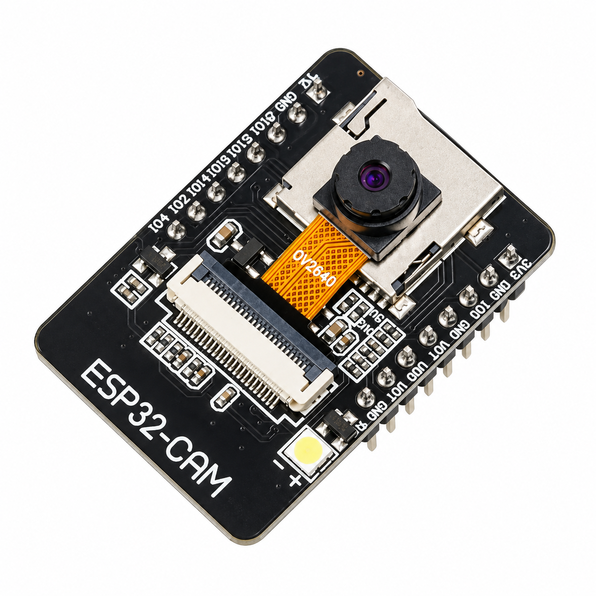

Aim
To detect motion using a PIR sensor and automatically capture a snapshot with the ESP32-CAM while providing buzzer, OLED and web-dashboard feedback.
About the Experiment
The PIR sensor is connected to GPIO 13 and detects motion around the ESP32-CAM.
When motion is detected, the buzzer on GPIO 12 sounds and the OV2640 captures a JPEG snapshot.
The most recent image is stored in memory and can be viewed from the Wi-Fi web dashboard. The OLED displays connection and capture status.
Components Required

AI-Thinker ESP32-CAM (×1)
Main controller with Wi-Fi and camera interface.

OV2640 Camera Module (×1)
Captures snapshots.

PIR Motion Sensor HC-SR501 (×1)
Detects motion.

Buzzer (×1)
Provides audible motion alert.

1.3" I²C OLED SSD1306 128×64 (×1)
Displays system and capture status.

USB-to-TTL Programmer (×1)
Used for programming the ESP32-CAM.

Breadboard (×1)
Used to assemble the circuit.

Jumper Wires
Used for electrical connections.
Circuit Connections
| Component | Pin | ESP32-CAM Connection |
|---|---|---|
| OLED | VCC | 3.3V |
| OLED | GND | GND |
| OLED | SDA | GPIO 14 |
| OLED | SCL | GPIO 15 |
| PIR Sensor | VCC | 5V |
| PIR Sensor | GND | GND |
| PIR Sensor | OUT | GPIO 13 |
| Buzzer | + | GPIO 12 |
| Buzzer | - | GND |
| USB-TTL | 5V | 5V |
| USB-TTL | GND | GND |
| USB-TTL | TX | U0R / GPIO 3 |
| USB-TTL | RX | U0T / GPIO 1 |
Circuit Diagram

Working Principle
↓
OLED, PIR, Buzzer and Camera Initialize
↓
ESP32-CAM Connects to Wi-Fi
↓
System Waits for PIR Motion
↓
Motion Detected
↓
Buzzer Alerts
↓
OV2640 Captures Snapshot
↓
Latest JPEG Stored in Memory
↓
Browser Displays Latest Snapshot
Procedure
- Connect OLED SDA to GPIO 14 and SCL to GPIO 15.
- Connect PIR OUT to GPIO 13 and power the PIR from 5V and GND.
- Connect the buzzer positive pin to GPIO 12 and negative pin to GND.
- Connect the USB-TTL programmer to the ESP32-CAM.
- Put GPIO 0 to GND only during upload.
- Upload the program and then remove GPIO 0 from GND.
- Press RESET and open Serial Monitor at 115200 baud.
- Open the ESP32-CAM IP address in a browser.
- Trigger the PIR sensor and confirm the buzzer and snapshot operation.
- Use Capture Now on the dashboard to test manual image capture.
Explore the Code
#include "esp_camera.h"
#include <WiFi.h>
#include <WebServer.h>
#include <Wire.h>
#include <Adafruit_GFX.h>
#include <Adafruit_SSD1306.h>
#define OLED_SDA 14
#define OLED_SCL 15
#define PIR_PIN 13
#define BUZZER_PIN 12
WebServer server(80);
bool motionDetected = false;
unsigned long lastMotionTime = 0;
const unsigned long MOTION_COOLDOWN = 5000;
void loop()
{
server.handleClient();
int pirState =
digitalRead(PIR_PIN);
if(
pirState == HIGH &&
!motionDetected &&
millis() - lastMotionTime >
MOTION_COOLDOWN
)
{
motionDetected = true;
lastMotionTime = millis();
buzzerAlert();
captureSnapshot();
}
if(pirState == LOW)
{
motionDetected = false;
}
delay(50);
}
Check Your Understanding
- Identify the main input used by this Experiment.
- Identify the main output or actuator controlled by the ESP32-CAM.
- Check the GPIO numbers in the Circuit Connections table before wiring.
Expected Output
The OLED shows startup, Wi-Fi and motion/capture messages.
When the PIR goes HIGH, the buzzer produces an alert and the camera captures a snapshot.
The browser dashboard shows the latest snapshot and provides a manual Capture Now button.
The most recent image is stored in memory for browser viewing.
Result
The ESP32-CAM Motion Snapshot System successfully detects motion, captures a JPEG snapshot, gives buzzer feedback and makes the latest image available through the web dashboard.
What You Learn
- Interfacing an HC-SR501 PIR sensor with ESP32-CAM.
- Controlling a buzzer from GPIO 12.
- Using an OLED on GPIO 14 and GPIO 15.
- Capturing and storing JPEG images in memory.
- Creating a Wi-Fi snapshot dashboard.